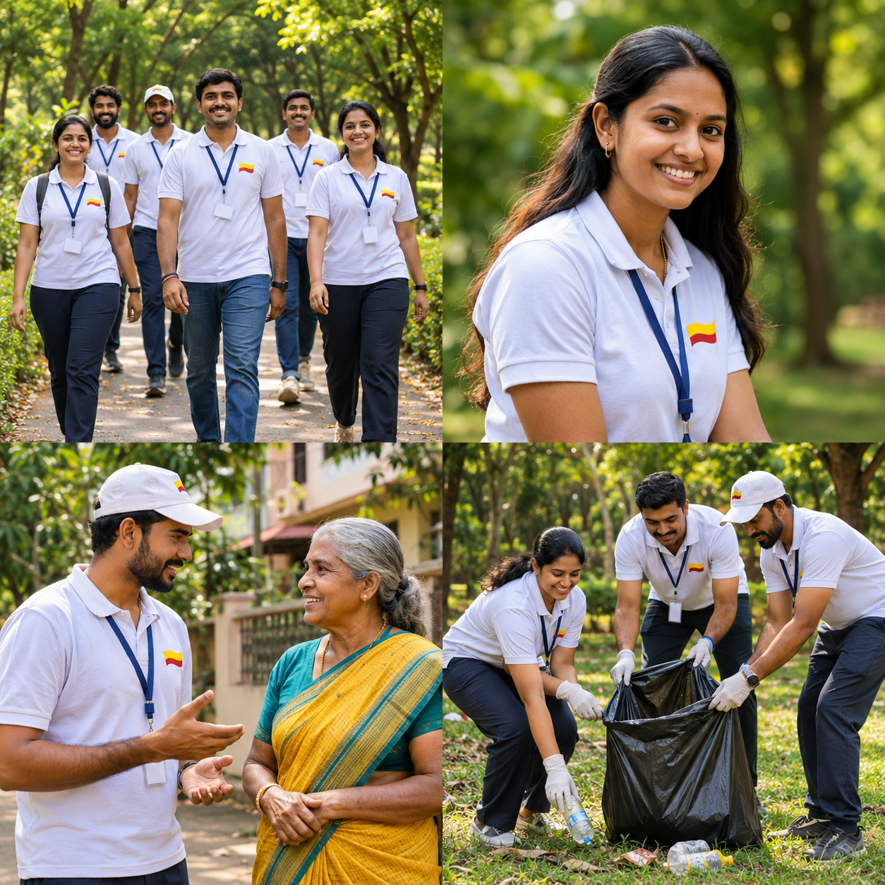

Ongoing
Ongoing
Leadership
PNP Youth Leadership Fellowship
Mentorship and leadership training for young change-makers.
Explore youth-focused initiatives for leadership, skills, civic engagement and stronger communities across Karnataka.
Design preview · Sample listings and availability
Ongoing
Mentorship and leadership training for young change-makers.
 Open
Open
Student forums for dialogue, ideas and campus-level action on public issues.

OngoingIndustry-relevant skills, digital training and career readiness support.
 Upcoming
Upcoming
Encourage and support student innovations for Karnataka’s public challenges.
 Open
Open
Sessions on democracy, rights, responsibilities and public policy for youth.
 Ongoing
Ongoing
Youth-led cleanliness and public space initiatives across campuses and communities.